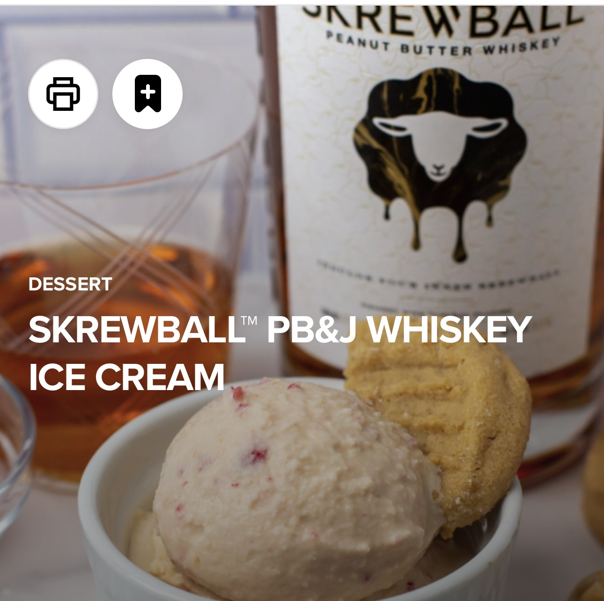

Home
Skrewball PB&J Whiskey Ice Cream

Peanut Butter, Jelly, Whiskey, Ice Cream? All in one?!
Decadently delicious Peanut Butter and Jelly inspired ice cream featuring Skrewball Peanut Butter Whiskey!
Ingredients
- 2 Tablespoons powdered peanut butter
- 3 Tablespoons granulated sugar
- 1 Teaspoon vanilla extract
- 2 Tablespoons Skrewball Peanut Butter Whiskey
- 1 Cup whole milk
- 3/4 Cup heavy cream
- 2 frozen strawberries
Steps
- In a medium sized bowl, combine the powdered peanut butter, sugar, vanilla, and whiskey until mixture is smooth. Add milk and whisk until sugar is dissolved, then slowly pour in heavy cream and mix until combined.
- Pour base into an empty CREAMi™ pint. Place storage lid on pint and freeze for 24 hours.
- Remove pint from freezer and remove lid from pint. Place pint in outer bowl, install Creamerizer™ Paddle onto outer bowl lid, and lock the lid assembly on the outer bowl. Place bowl assembly on motor base and twist the handle right to raise the platform and lock in place.
- Select ICE CREAM.
- With a spoon, create a 1 1/2-inch-wide hole that reaches the bottom of the pint. Add the frozen strawberries to the hole in the pint and process again using the MIX-IN program.
- When processing is complete, portion ice cream as desired and serve immediately.